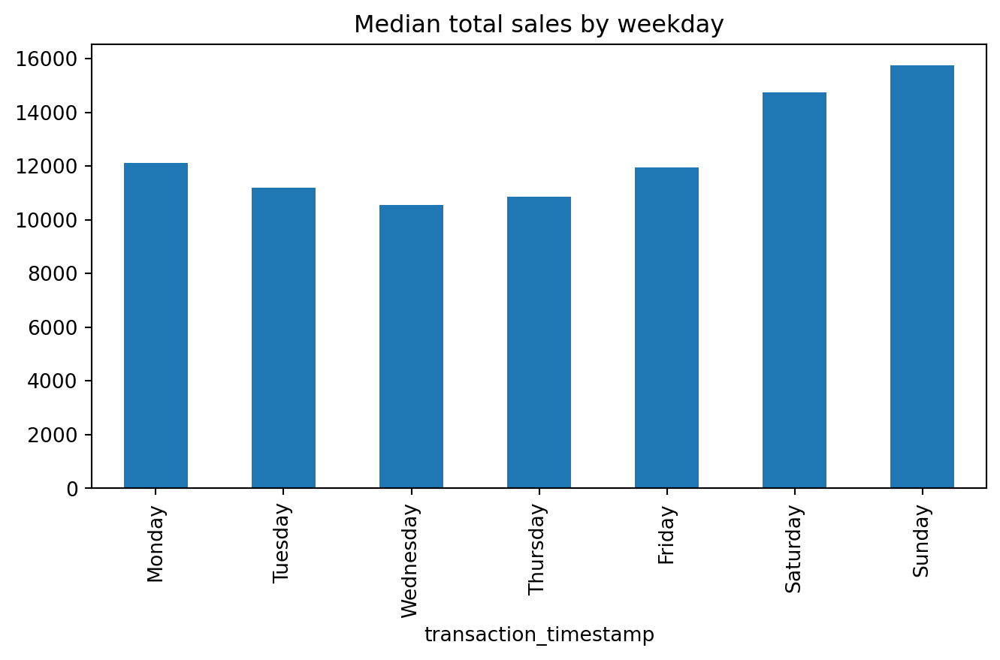

You’ve been analyzing shopper data for a major grocery chain. After cleaning and summarizing sales trends, your manager sends a quick message: “Can you give me a quick chart to show how spending varies by age group?”
You could export the data and fire up Excel, but Python and Pandas offer a faster and more reproducible path. This chapter shows how to create quick, useful plots directly from your DataFrames.
Data visualization is a core skill in any data analyst’s toolkit. While numbers and statistics tell part of the story, charts and graphs help us understand patterns, uncover insights, and communicate findings more effectively. There are two primary use cases for visualization in data science:
Exploratory Visualization – These are quick, often simple charts we create during analysis to help us explore our data. For example, histograms help reveal the shape of distributions, bar plots summarize group-level differences, and scatterplots surface relationships. These visualizations help answer questions like:
“Is there an outlier in the data?”
“Does spending vary by age group?”
“Are there seasonal trends in sales?”
Explanatory Visualization – These are polished, often customized visuals used to communicate findings to stakeholders. They help tell a story with data, emphasizing clarity, aesthetics, and focus. A good explanatory chart might show:
The total revenue trend across quarters
The customer segment driving most of the profit
The success of a new marketing promotion
In this chapter, we focus on exploratory visualization using Pandas, a quick and powerful way to visually explore data and uncover insights — all within the same environment where your analysis lives. In future chapters, we’ll dive deeper into refining visualizations for explanatory purposes, showing how libraries like Matplotlib* and Bokeh can help you tell compelling, professional-grade data stories.
The Python visualization ecosystem is vast and can come across as daunting at first. In fact, PyViz is a website that was created for the sole purpose of helping users decide on the best open-source Python data visualization tools for their needs. I highly recommend you take some time to explore the resource.
By the end of this chapter, you will be able to:
Create univariate plots based on Series
Create bivariate plots based on DataFrames
Noteüìì Follow Along in Colab!
As you read through this chapter, we encourage you to follow along using the companion notebook in Google Colab (or other editor of choice). This interactive notebook lets you run code examples covered in the chapter—and experiment with your own ideas.
/opt/hostedtoolcache/Python/3.13.7/x64/lib/python3.13/site-packages/completejourney_py/get_data.py:2: UserWarning: pkg_resources is deprecated as an API. See https://setuptools.pypa.io/en/latest/pkg_resources.html. The pkg_resources package is slated for removal as early as 2025-11-30. Refrain from using this package or pin to Setuptools<81.
from pkg_resources import resource_filename
13.2 The .plot Attribute
One of the most convenient aspects of using Pandas for data visualization is that Series and DataFrame objects come equipped with a built-in .plot attribute. This attribute serves as a simple wrapper around the powerful Matplotlib library (which we’ll discuss in the next chapter), enabling you to generate a wide range of plots with minimal code.
This .plot attribute is a little unique as you can call it as a method and specify the plot of interest using an argument:
df.plot(kind='scatter', ...)
Or you can use it to access sub-methods:
df.plot.scatter(...)
There are several plotting options via .plot, including but not limited to:
line: (default) for time series or continuous data
bar / barh: for categorical comparisons
hist: for distributions of continuous variables
box: for spotting outliers and summary statistics
scatter: for examining relationships between two numeric variables
Here’s a simple example of a histogram created from a Series:
df['sales_value'].plot.hist(bins=20, log=True)
NoneVideo Primer
Here’s a nice introductory video to watch before we dig into the details that follow.
What parameter would you use to control the figure size?
What parameter would you use to add a title?
What parameter(s) would you use to log scale an x and/or y axis?
13.3 Visualizing Single Variables (Univariate Plots)
Univariate plots help us understand the distribution, range, and key characteristics of a single variable. These visualizations are especially useful during exploratory data analysis, where you want to:
Spot patterns, such as skewness or multimodality
Identify outliers or unusual values
Compare distributions across different groups (later, with grouping)
Common types of univariate plots include:
Histograms: Show the distribution of a numerical variable by dividing values into bins.
Boxplots: Display the median, quartiles, and potential outliers in a compact format.
Bar plots (for categorical variables): Visualize frequency or total values across discrete categories.
These plots are quick to generate and provide immediate insight into the shape and spread of your data. Let’s look at a couple of examples using the sales_value variable. We’ve already looked at some summary stats of our sales_value distribution…
df['sales_value'].describe()
count 1.469307e+06
mean 3.128032e+00
std 4.290385e+00
min 0.000000e+00
25% 1.290000e+00
50% 2.000000e+00
75% 3.490000e+00
max 8.400000e+02
Name: sales_value, dtype: float64
but we can understand more by visualizing this variable. But if we look at a basic histogram it doesn’t tell us a whole lot because we have several zero dollar transactions (i.e. returns) in our data plus this feature is heavily skewed towards low value transactions (measured by cents or single dollar values).
df['sales_value'].plot.hist()
We can make some adjustments such as remove any zero dollar transactions, log transform our axis, and increase the number of bins. This helps to pull out additional insights in our sales_value distribution. For example, we see we have a lot of very low dollar transactions and the frequency decreases as the transaction dollar amount increases. However, we also see an increase in transactions right at the $200 mark but that decreases quickly. There are also a few outlier transaction values that are around the $600 and $800 value marks.
( df.loc[df['sales_value'] >0, 'sales_value'] .plot.hist(log=True, bins=30, title='Distribution of Sales Values'));
Box plots and kernel density estimation (KDE) plots are an alternative way to view univariate distribtions. For example, let’s compute the total sales_value across all stores. The resulting sales_by_store object is a Series. A boxplot provides a lot of information (read about them here). We can see that the median (red line) is around \(10^2 = 100\) and the interquartile range is within the blue box. We also see we have some outliers on the upper end.
sales_by_store = df.groupby('store_id')['sales_value'].sum()# boxplotsales_by_store.plot.box(logy=True, title='Distribution of total sales across all stores');
We can quickly compare our boxplot with our numeric distribution and we see our they are similar (median: 96, interquartile range: 25-2966).
sales_by_store.describe()
count 457.000000
mean 10056.979387
std 20671.239346
min 0.500000
25% 25.390000
50% 95.590000
75% 2965.560000
max 148169.670000
Name: sales_value, dtype: float64
The KDE plot (which is also produced with .plot.density()) provides a smoothed histogram.
sales_by_store.plot.kde(title='Distribution of total sales across all stores');
The .plot sub-methods work exceptionally well with time series data. To illustrate, let’s create a Series that contains the sales_value of each transaction with the transaction_timestamp as the index.
A handy method we have not talked about is resample() which allows us to easily convert time series data. For example, if we wanted to sum all sales_values by the hour we can use .resample('h') followed by .sum().
The above plot is a bit busy since we’re plotting values for every hour over the course of a year. Let’s reduce the frequency and, instead, sum the sales_values by day (.resample('D')). Now we see a bit more of a descriptive pattern. It looks like there is routinely higher sales transactions on particular days (probably certain days of the week such as weekends).
Let’s validate our assumption above regarding the weekly shopping pattern. The below code chunk performs the same as above where we compute total daily sales across all days of the year but then we follow that up by extracting the name of the weekday from the date-timestamp and then grouping by the day of week and computing the median and interquartile range (IQR) for all daily sales for the year.
If you have not yet seen code that looks like lambda idx: idx.day_name() do not worry. These are called lambda (anonymous) functions and we’ll discuss them more in a future chapter.
We definitely see that Saturday and Sunday are the weekdays with the heaviest sales value transactions.
day_order = [ 'Monday', 'Tuesday', 'Wednesday', 'Thursday', 'Friday', 'Saturday', 'Sunday']total_sales_by_weekday = ( sales .resample('D') # resample by day .sum() # compute total daily sales .rename(lambda idx: idx.day_name()) # extract week day name from date-timestamp .groupby('transaction_timestamp') # group by day of week .quantile([.25, .5, .75]) # compute median and IQR of sales values .unstack() # flatten output (results in a DataFrame) .reindex(day_order) # force index to follow weekday order )total_sales_by_weekday.plot.line(title='Median and IQR of total sales by weekday', figsize=(10,4));
Another common plot for Series data is the bar plot. Let’s look at the median values from the analysis above. If we peak at the result we see we have a Series that contains the median total sales values for each weekday.
Rather than plot this as a line chart as we did above, we can use .plot.bar() to create a bar plot:
median_sales_by_weekday.plot.bar(title='Median total sales by weekday', figsize=(8,4));

A common pattern you’ll use is to follow a .value_counts() method call with a bar plot. For example, say we want to assess the number of transactions in our data by department. We could easily get this with the following:
( df['department'] .value_counts(ascending=True) .plot.barh(title='Total transactions by department', figsize=(6,8)));
Unfortunately, we see a lot of very small values that overcrowds the plot. We can make some small adjustments to our code to leave all department values for those departments in the top 10 as is but for all departments not in the top 10 we can condense them down to an ‘Other’ category.
We will discuss the .where() method in a later module. For now just realize its a way to apply an if-else condition to a Series.
üîç Summary: Exploring Univariate Distributions Through Iteration
This section demonstrates how we can iteratively filter, aggregate, and visualize data to better understand the distribution and characteristics of a single variable — in this case, sales_value. Starting with basic summary statistics, we build deeper insights by:
Filtering out uninformative records (e.g., $0 transactions)
Aggregating data at relevant levels (e.g., by basket or store)
Applying different types of univariate plots (histograms, boxplots, KDEs) to reveal patterns, outliers, and skew
Through this iterative approach, we move from basic descriptive stats to more nuanced visual understanding of sales behavior — helping us identify patterns like high-frequency low-dollar transactions or weekly sales cycles. The section also illustrates how to apply .plot sub-methods for time series and categorical visualizations, reinforcing how visual exploration and data transformation go hand-in-hand in exploratory data analysis.
Knowledge check
NoneTry This!
Create a histogram for the quantity column. Remove any zero quantities and/or adjust the axis to make the plot more informative.
Compute the sum of quantity for each store_id. Now create density plot and box plot. Compare these plots to the summary statistics provided by .describe().
Use .resample() to compute the sum of quantity for each day. Plot the results to assess if there is similar pattern as we saw with sales_value.
Use a bar plot to plot the total transaction quantities by department. Are the results similar to what we saw with total sales_value by department?
13.4 Visualizing Relationships Between Variables (Bivariate Plots)
In the previous section, we focused on understanding the distribution of a single variable — sales_value — using univariate plots. But as we explored patterns like how sales varied by day of the week or department, we were already stepping into the world of bivariate analysis: looking at how one variable (sales) changes in relation to another (like day or department).
This section builds on that by introducing formal approaches to bivariate visualization — using Pandas’ .plot() method with DataFrames to uncover relationships between two variables. These visualizations help answer questions like:
How do total sales compare across demographic groups?
Are some product categories driving more revenue than others?
How does purchasing behavior change over time?
Let’s look at some examples of bar plots, line plots, and scatter plots to explore bivariate comparisons and trends — reinforcing how visualizing relationships is key to discovering insights in your data.
Scatter Plots: Continuous Relationships
To visualize the relationship between two continuous variables, such as sales_value and quantity, we can use a scatter plot. This requires specifying the x and y arguments:
df.plot.scatter(x='quantity', y='sales_value', title='Sales versus quantity', figsize=(8,4))
This plot helps us see whether higher quantities tend to drive higher sales values (they do — but with a lot of low-spend noise). Scatter plots are ideal for spotting correlations, clusters, and outliers.
Bar Charts: Group Comparisons
Although we previously used bar plots in a univariate context (e.g., frequency of departments), they’re just as valuable for bivariate visualizations — especially when summarizing a numeric variable across categories.
Let’s say we want to view the top 10 departments by total sales:
It’s common to sort values before bar plotting to produce a more readable left-to-right visual.
Multi-Series Plots
One benefit of plotting from a DataFrame is that we can visualize multiple numeric columns at once. Suppose we want to compare total sales_value and quantity per department:
This is especially useful when comparing two related metrics across the same category.
Time Series with Multiple Columns
When your DataFrame includes a datetime index, the .plot() methods become even more powerful. For example, let’s look at daily total discounts for the GROCERY department across three types of discounts:
Compute the average sales_value and quantity by household_id. Create a density plot that visualizes both columns together.
Use a bar plot to assess whether married versus unmarried customers produce more transactions. Then do the same for age groups.
Use .resample() to compute the monthly totals of quantity and sales_value. Plot the results to explore which months are the busiest.
13.5 Under the hood - Matplotlib
Underneath the hood Pandas is using Matplotlib to create the plots. Matplotlib is the most tried-and-true, mature plotting library in Python; however, its a bit more difficult to digest Matplotlib which is why I first introduce plotting with Pandas.
In the next lesson we will dig into Matplotlib because, with it being the most popular plotting library in the Python ecosystem, it is important for you to have a baseline understanding of its capabilities. But one thing I want to point out here is, since Pandas builds plots based on Matplotlib, we can actually use Matplotlib in conjunction with Pandas to advance our plots.
For example, Matplotlib provides many style options that can be used to beautify our plots. If you are familiar with fivethirtyeight.com you’ll know that most of their visualizations have a consistent theme. We can use Matplotlib to change the style of our plots to look like fivethirtyeight plots.
import matplotlib.pyplot as pltplt.style.use('fivethirtyeight')median_sales_by_weekday.plot.bar(title='Median total sales by weekday', figsize=(8,4))
We may also want to refine our tick marks so that they are formatted in the units of interest. For example, below we use Matplotlib’s ticker module to format our y-axis to be in dollar and comma formatted units:
import matplotlib.ticker as mticktick_format = mtick.StrMethodFormatter('${x:,.0f}')( median_sales_by_weekday .plot.bar(title='Median total sales by weekday', xlabel='', figsize=(8,4)) .yaxis.set_major_formatter(tick_format))
We’ll explore more Matplotlib capabilities in the next lesson but for now, happy Pandas plotting!
13.6 Summary
In this chapter, we explored how to use Pandas’ built-in .plot() functionality to quickly and effectively visualize data. Starting with univariate plots, we examined how to understand the distribution of a single variable — like sales_value — using histograms, boxplots, and KDE plots. We saw how filtering and transforming data before plotting helps surface key insights, such as frequent low-dollar transactions and outlier behavior.
We then moved into bivariate visualizations, where we analyzed how one variable changes in relation to another. We used scatter plots to assess continuous relationships, bar charts to compare grouped values (like total sales by department), and time series plots to understand trends over days, weeks, and months. Along the way, we learned how .plot() works with both Series and DataFrames, and how to create multi-series plots for deeper comparative insight.
While Pandas plots are perfect for fast exploratory analysis, they also serve as a gentle introduction to the broader Python visualization ecosystem.
What’s Next?
In the next chapter, we’ll dive deeper into the core engine behind Pandas plots — the Matplotlib library. You’ll learn how to build highly customized visualizations from scratch using Matplotlib’s object-oriented API. This will give you full control over plot styling, layout, and annotations — crucial for producing professional-grade charts.
Then, in the final chapter of this visualization module, we’ll explore Bokeh, a more advanced plotting library for building interactive, web-ready charts. These tools are especially powerful when communicating results to stakeholders, allowing you to go beyond static images to create interactive dashboards and storytelling experiences.
So far, you’ve built a strong foundation in fast, exploratory plotting with Pandas. Up next: mastering the tools that help you refine and present your story with clarity and impact.
Use the datasets provided by the completejourney_py package to complete the following exercises. These tasks will help you practice filtering, grouping, and visualizing data using .plot() for both univariate and bivariate analysis.
None1. Identifying Pizza Products
Using the products table:
Identify all unique products where the product_type contains the word "pizza" (case-insensitive).
How many distinct pizza products are sold?
Tip: Use .str.contains() to search the column.
None2. Pizza Purchases by Marital Status
Join the transactions, products, and demographics tables.
Filter to transactions where the product_type contains "pizza".
Use a bar plot to compare the total quantity of pizza items purchased by married vs. unmarried households.
Bonus: Are there any differences in total sales_value between the groups?
None3. Quantity vs. Sales Value of Pizza
Use a scatter plot to visualize the relationship between quantity and sales_value for pizza product transactions.
What patterns do you observe?
Are there any outliers in either dimension?
Tip: Use .plot.scatter() on the filtered DataFrame.
None4. Daily Pizza Sales Trends
Use .resample() to analyze time-based patterns:
Filter to pizza products as before.
Compute the total quantity of pizza products purchased per day.
Use a line plot to visualize the daily trend across the year.
Bonus: Do you notice any recurring spikes? Can you hypothesize what might cause them?